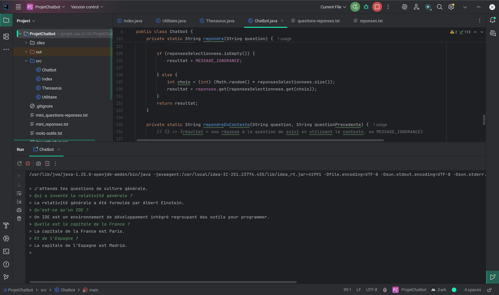
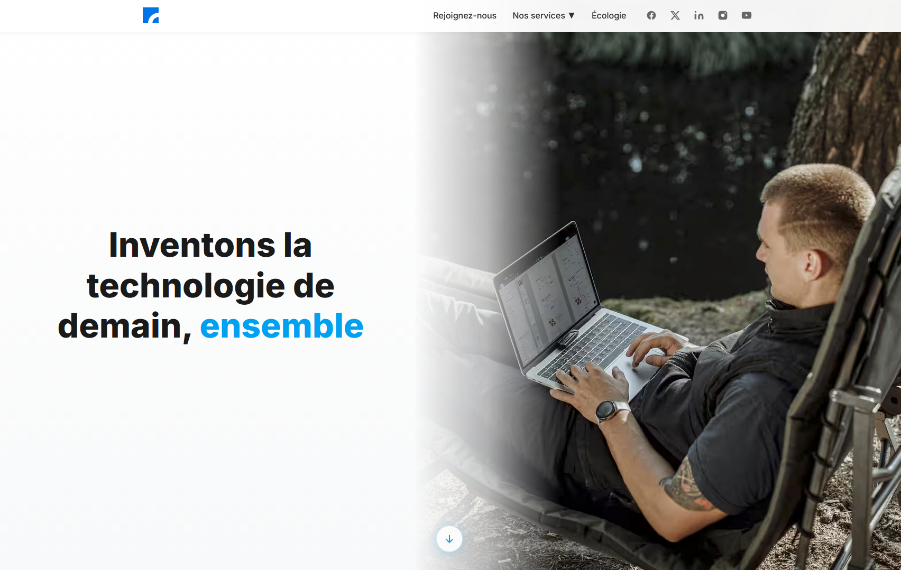

BINÔME
PROJET CHATBOT
CIBLE : Création de tout ou partie d'une application.
Concevoir, coder, tester et intégrer une solution informatique.
Étudiant en BUT informatique à l'IUT2 de Grenoble, je me spécialise en cybersécurité et réseaux. Je conçois des projets mêlant technique, design et résolution de problèmes.
HTML, CSS, JavaScript, Python, SQL, Java
React Git, Figma
MySQL, PostgreSQL
Travail d'équipe, Communication, Veille
CIBLE : Création de tout ou partie d'une application.
Concevoir, coder, tester et intégrer une solution informatique.
CIBLE : Filtrer et exporter des données erronées.
Script SQL créant une table propre et générant un CSV pour analyses.
CIBLE : Préparer un poste pour le développement.
Identifier, installer et configurer un système OS et outils.
CIBLE : Implémentation d'une BDD.
Concevoir une BD relationnelle à partir d'un cahier des charges.
CIBLE : Déployer une stack web complète sur Debian.
Guide d'installation reproductible d'un serveur web Linux complet.
CIBLE : Site vitrine Green IT pour Atos.
Site écoconçu et rapport de synthèse vulgarisé pour un public de 3ème.

